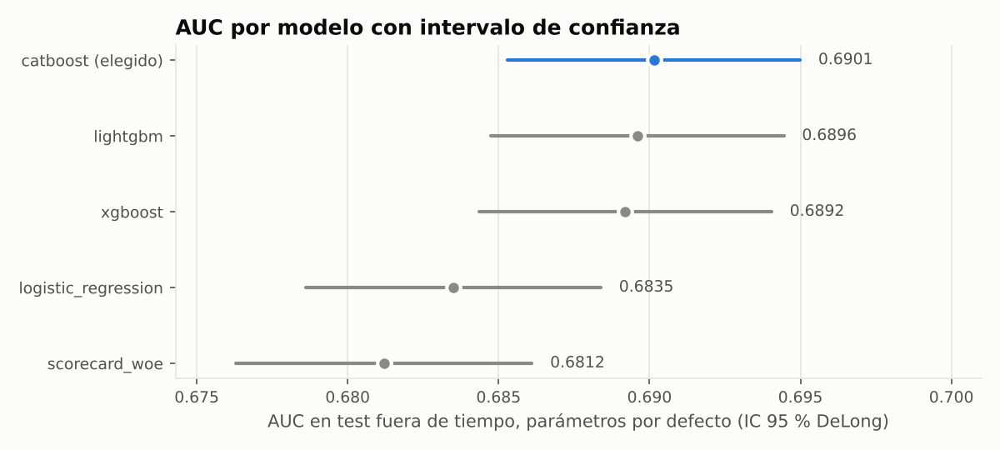
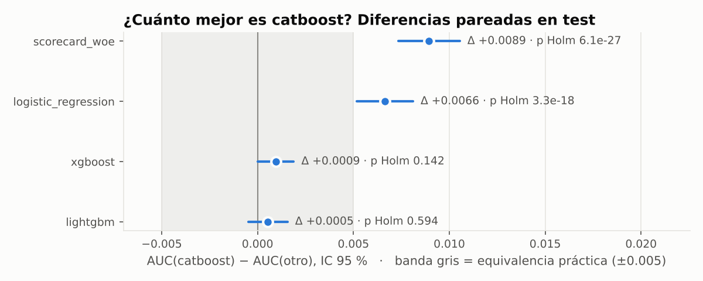
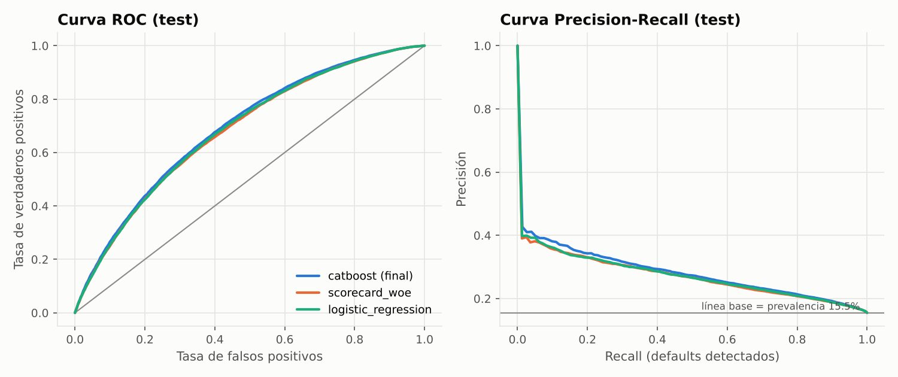
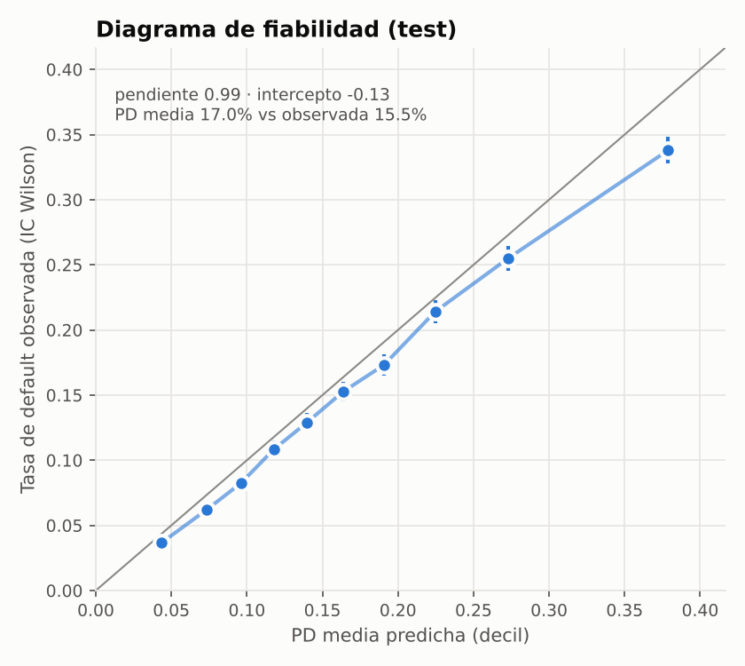
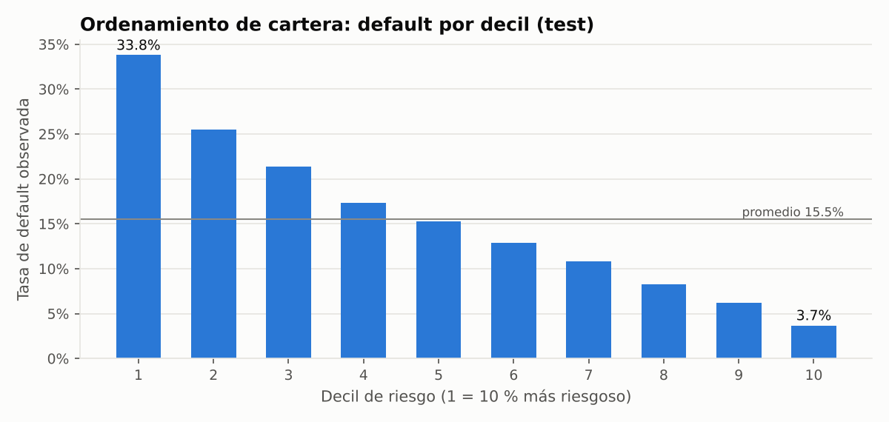
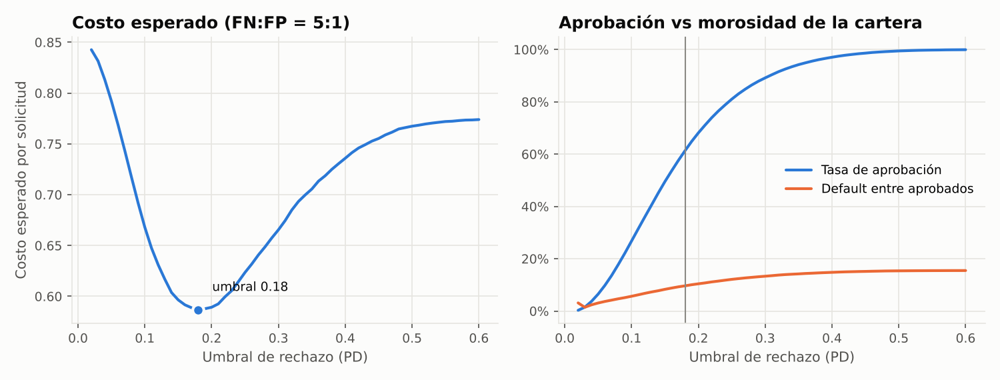
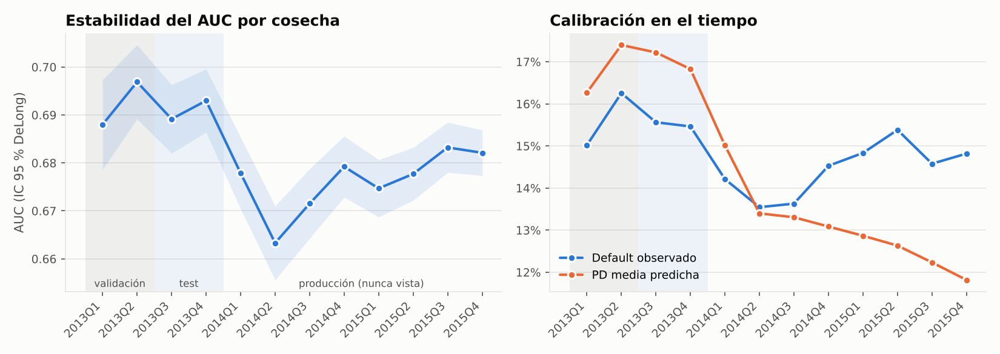
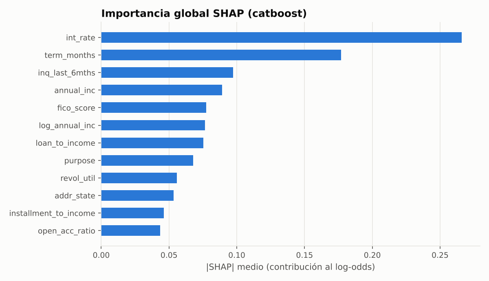
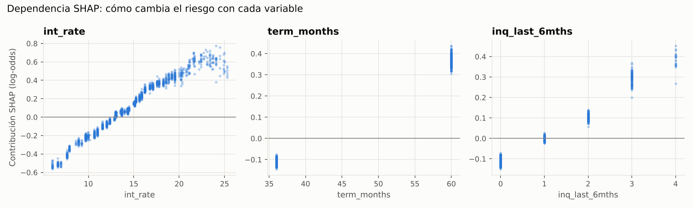
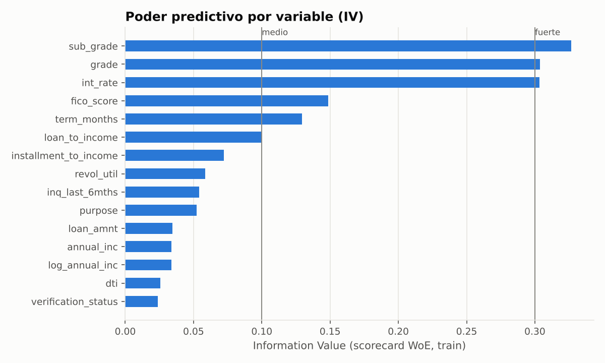

Evaluar una solicitud de crédito
El score lo calcula el modelo champion LightGBM v1.0.0 mediante ONNX Runtime WebAssembly directamente en tu navegador, con 0 ms de latencia de servidor.
| Variable | Impacto (log-odds) | Efecto en el riesgo |
|---|
Monitoreo del replay de producción (originación 2014-2015)
Seguimiento continuo de la estabilidad del portafolio, concept drift con desenlaces reales y data drift por variable.
- ROC-AUC en producción (0.6904) dentro del rango esperado sin degradación material.
- Data drift global bajo control: PSI medio = 0.048 (límite de advertencia: 0.10).
| Variable | Tipo | PSI | KS p-value | Estado |
|---|
| Fecha de evaluación | Versión Champion | Versión Challenger | AUC Champion | AUC Challenger | p-valor | Decisión |
|---|
| Fecha del evento | Disparador | Versión anterior | Nueva versión | Resultado |
|---|
Benchmark de modelos (último entrenamiento)
Evaluación rigurosa de algoritmos candidatos sobre partición temporal de validación y test fuera de tiempo.
| Algoritmo | AUC Train | AUC Validación | AUC Test | Brecha Train-Val | KS Test | Brier Test | Latencia |
|---|
"champion": "1.0.0 (LightGBM)",
"challenger": "1.1.0 (CatBoost Optuna)",
"edge_runtime": "ONNX Runtime WebAssembly (WASM)",
"opset": 14,
"traffic_split": "80% Champion / 20% Challenger"
}
Por qué este modelo
Fundamentación estadística, análisis de discriminación, umbrales de negocio y galería de validación.
Cómo se eligió: Cada candidato se compara contra el de mayor AUC de validación mediante la prueba de DeLong para curvas ROC correlacionadas, con ajuste por comparaciones múltiples de Holm y un margen práctico de equivalencia de 0.005 de AUC. Entre los modelos empatados se selecciona el de menor complejidad computacional (parsimonia).
Estudio de Ablación: Sin las variables grade, sub_grade ni int_rate (el scoring comercial propio de Lending Club), el AUC disminuye de 0.6901 a 0.6720. Esto demuestra formalmente que las variables socioeconómicas y crediticias aportan información predictiva genuina e independiente.










Qué hay detrás de esta plataforma
Arquitectura end-to-end sobre Databricks Free Edition y exportación Edge para inferencia web ultrarrápida.
1. Datos y Lakehouse Medallion
2.26 millones de préstamos de Lending Club (2007-2018) en una arquitectura Bronze, Silver, Gold sobre Delta Lake, con validaciones de calidad bloqueantes y solo variables conocidas al solicitar (sin data leakage ni sesgo de censura).
2. Benchmark y Entrenamiento Riguroso
Benchmark de regresión logística, XGBoost, LightGBM y CatBoost más un scorecard tradicional WoE. Partición temporal estricta (entrenamiento 2007-2012, validación 2013-S1, test fuera de tiempo 2013-S2). Selección con prueba de DeLong, ajuste de Holm y tuning con Optuna.
3. Registro MLflow, Model Serving & Edge ONNX
Registro en MLflow Unity Catalog con aliases @champion y @challenger con trazabilidad completa (Git commit y versión de Delta Lake). Modelo exportado a formato ONNX (Open Neural Network Exchange) para inferencia nativa WebAssembly en el navegador.
4. Producción Simulada y Continuous Training
Replay mes a mes de la originación 2014-2015. Monitoreo de Data Drift (PSI por variable), Prediction Drift y Concept Drift con etiquetas retrasadas. Reentrenamiento continuo automatizado con Databricks Jobs.
5. CI/CD y Calidad de Código
GitHub Actions con gates de integración, 100+ tests unitarios y de contrato, análisis de vulnerabilidades con CodeQL y validación estricta de Databricks Asset Bundles.